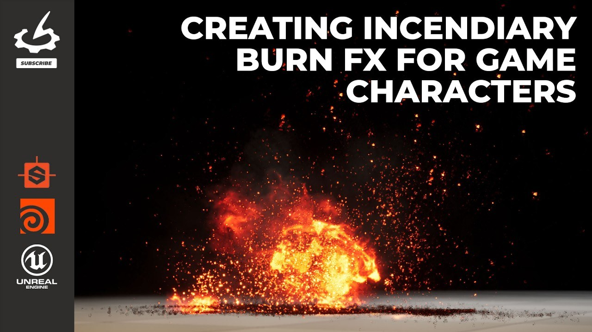

角色燃燒遊戲特效課程：串接 Niagara、Houdini 與程序貼圖
Ashley Lyons 的課程以 Unreal 材質和 Niagara 點燃角色，再轉成煙與灰；Designer 製作火星貼圖，Houdini Pyro 則產生可供引擎使用的序列貼圖，教學超過六小時。

角色製作 ★★★★★
完整分析
燃燒材質到粒子系統的流程
課程先在 Unreal Material Editor 建立可調參數的主材質，再以 Niagara 設定發射器、生成、運動和時序，讓角色燃起並散成煙灰。這是材質與粒子共同驅動的遊戲效果，不是只在角色表面貼一段火焰影片。
離線模擬與程序貼圖的製作價值
Designer 用於火星系統的程序貼圖；Houdini Pyro 另外模擬煙火並渲染 flipbook。兩種資產交給 Niagara 使用，推論上可把高成本煙火形態先轉為貼圖，再在引擎安排播放與粒子時序，但本文沒有提供遊戲內耗時數據。
課程介紹與成果驗證限制
來源列可下載 Houdini、Designer 專案與貼圖，但取得方式是 Gnomon 訂閱，不是全部免費課程。CG Channel 亦揭露由 Gnomon 持有；文章介紹的可用於製作之定位不等於獨立效能驗證，仍缺目標平台的實際測試。
BRIEF｜來源已驗證；證據深度較有限，完整分析會明確區分已知資訊與待驗證事項。